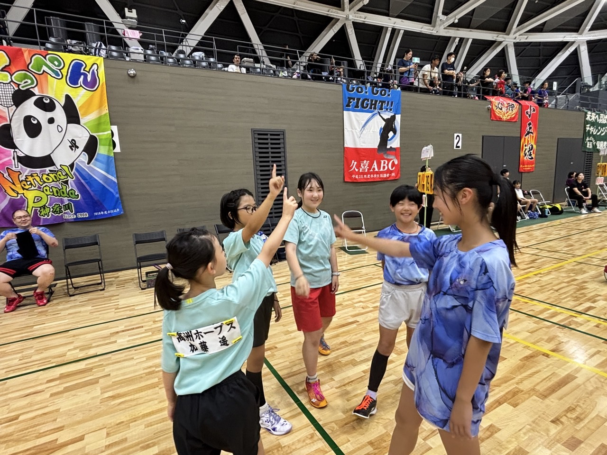
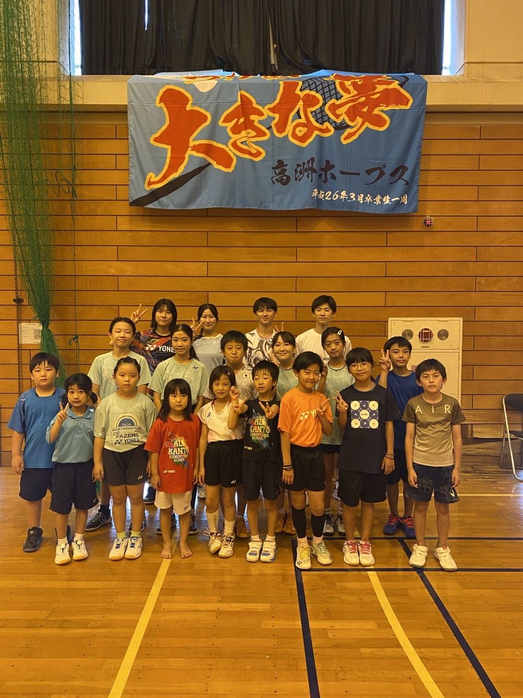
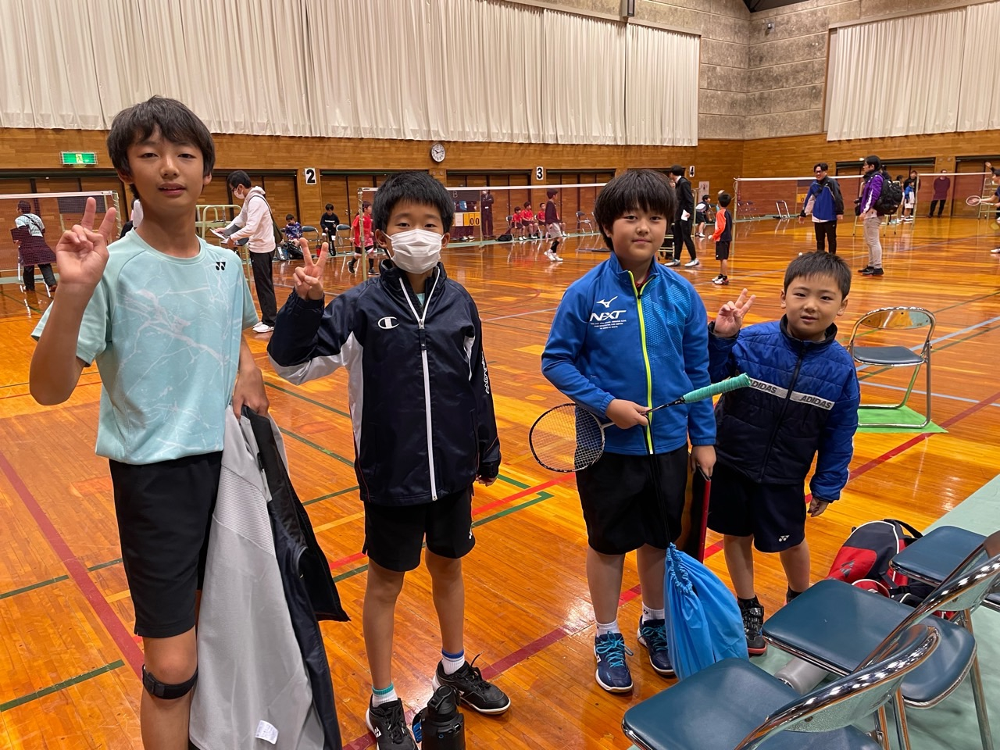
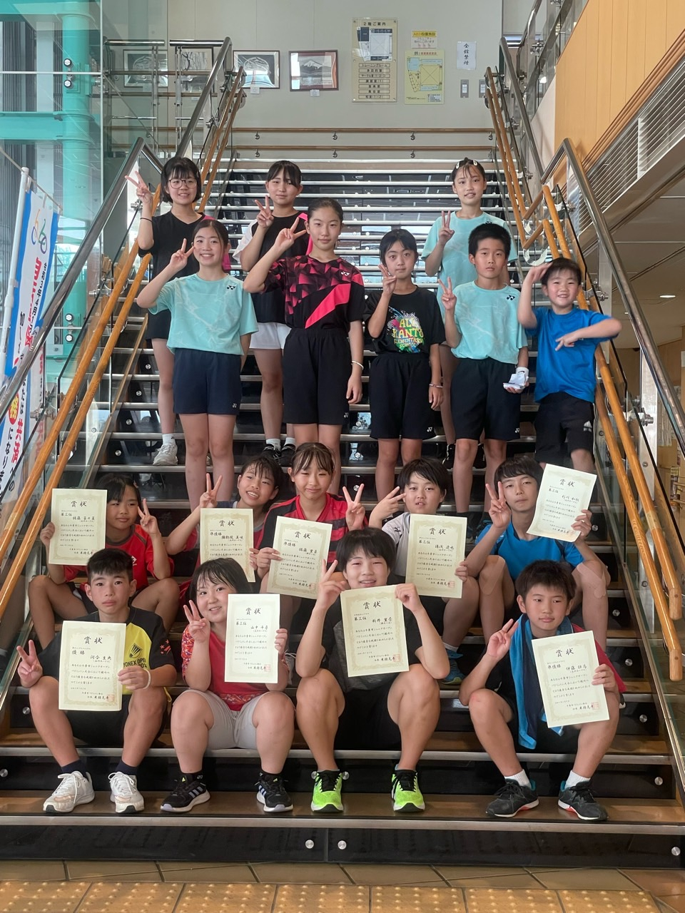
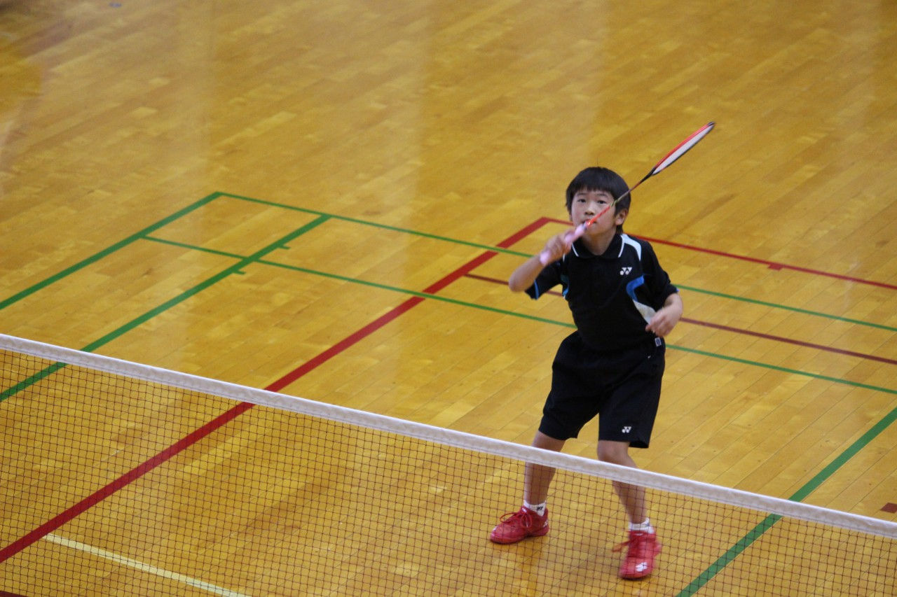
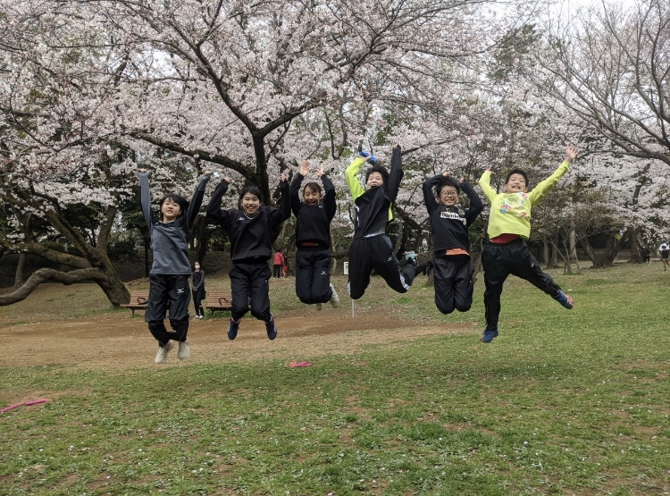

2026.05.28 01:36
🌸第42回 若葉カップ千葉県予選
6月24日、若葉の県予選女子団体戦に7名で挑みました。 団体戦は、ただ「強い選手が勝てばいい」というものではありません。1本、1点、そのすべてがチーム全体の結果につながる、本当に重みのある戦いです。 今回出場した7人も、それぞれが自分の役割をしっかり意識しながらコートに立っていました。 試合に出る選手だけではなく、応援する選手、次に備えて準備する選手、ベンチ...
2026.05.28 01:36
6月24日、若葉の県予選女子団体戦に7名で挑みました。 団体戦は、ただ「強い選手が勝てばいい」というものではありません。1本、1点、そのすべてがチーム全体の結果につながる、本当に重みのある戦いです。 今回出場した7人も、それぞれが自分の役割をしっかり意識しながらコートに立っていました。 試合に出る選手だけではなく、応援する選手、次に備えて準備する選手、ベンチ...

2026.03.30 04:50
28日、29日の2日間、県内で一年で最も重要な学年別大会が開催されました。今年はホープスから22名が出場し、それぞれがこの一年間の練習の成果を発揮する舞台に立ちました。本大会は単なる試合ではなく、自分自身の成長を確認し、今後の課題を見つける大切な機会でもあります。 試合が始まると、会場には独特の緊張感が漂い、普段とは違う雰囲気に包まれました。コート上では真剣...

2026.03.26 02:21
3月22日に6年生の送別会を行いました。毎年のことながら、時間の流れの速さを実感します。今年のホープスからは、9名の6年生が卒業を迎えました。まだ桜も咲ききっていない、どこか切なさの漂うこの季節に、彼らの歩みを振り返る特別な一日となりました。 在部期間はそれぞれ異なり、長くチームを支えてくれた子もいれば、途中から加わりながらも大きく成長した子もいます。しかし...

2026.02.13 04:47
先日行われた親子で楽しむバドミントン大会には、全12組の親子が参加し、会場は終始あたたかい雰囲気に包まれました。 普段は子どもたちが主役の大会ですが、この日はお父さん・お母さんもコートに立ち、同じ目線でシャトルを追いかけます。 最初は少し緊張気味だった保護者の方々も、ラリーが続くうちに自然と笑顔に。 子どもたちも、いつもとは違う“パートナー”とのダブルスにワ...

2026.02.02 00:55
2026年1月24日・25日に行われた「第10回関東ていがくねんオープン茨城」に、HOPESから3名の選手が出場しました。 今大会は15点制の打ち切り方式で、序盤の数点が試合全体を大きく左右します。 小さな判断ミスや単純なミスが続くと、修正する前に試合が終わってしまう厳しさを改めて感じました。特にスロースターターの選手にとっては、試合開始直後のラリーの組み立...

2026.01.05 04:36
毎年恒例の新春ホープス杯が、今年も元気いっぱいに開催されました。 新年最初の活動は、ラケットを握る前に体を動かすところから始まります。午前中は全員参加の5kmマラソン。冷たい空気の中、それぞれのペースで走りながら、新しい一年への気持ちを整える大切な時間となりました。 5kmは決して楽な距離ではありませんが、最後まで諦めずに走り切る姿から、子どもたち一人ひとり...

2025.12.26 02:20
🌸団体戦 今回出場した小学生団体戦では、チームの中に千葉県代表として選出された選手が2名(ちひろ/かんな )在籍していました。 そのうちの1名はダブルスとして出場し、団体戦の第一試合を任されることになりました。 初戦の相手は、全国でも常に上位に名を連ねる強豪・福島県。 試合前から非常に厳しい戦いになることは予想されていました。 試合が始まると、福島県ペアの...

2025.12.02 04:57
11月30日に開催された「第4回 Tochigi ちびっこオープン」に、ホープス からは5名の選手が出場しました。 今大会は準々決勝までは15点打ち切り・延長なしという、立ち上がりの良し悪しがそのまま結果に直結する、とても厳しい試合形式でした。 結果は、 4年生男子が1回戦、4年生女子が1回戦／2回戦、3年生女子が優勝／1回戦という内容でした。それぞれが自分...

2025.11.25 05:53
今回の団体戦には、ホープスから 5チーム・計22名 がエントリーし、これまででも最大規模の出場となりました。試合形式は 「1単 → 2複 → 3単」 の構成で、どの試合もチームの勝敗を左右する大切な1点。誰一人として “ついでの試合” はなく、全員がチームのために本気で戦う一日となりました。 子どもたちは皆、 「自分の1点がチームを救うかもしれな...

2025.10.20 02:28
10月18日・19日の2日間、山梨県で「全日本小学生バドミントン大会 関東予選」が開催されました。 関東各県から代表選手たちが集まり、「全国大会」への切符をかけて熱い戦いが繰り広げられました。 ホープスからも男女合わせて7名の選手が出場し、それぞれが自分の目標を胸にコートに立ちました。 まずは結果報告です。 6年女子ダブルス：2組出場...

2025.10.16 06:58
10/13日に行われた「千葉市ジュニアSpecial大会」には、 ホープスの男女合わせて12名が出場しました。 結果は以下の通りです。 6年以女子下シングルス：3位 5年以男子下シングルス：優勝 4年以女子下シングルス：優勝&準優勝 関東予選に向けた緊張感の中で、シングルスの試合にも出場しました。 少しでも関東予選...

2025.09.16 04:39
毎年恒例の秋合宿は、子どもたちにとって大きな楽しみのひとつです。集中した練習と団体生活を通して、短期間で大きな成長を遂げることができます。今回の合宿は三日間にわたり、練習内容は濃密でバランスよく組まれており、技術や体力の向上だけでなく、仲間同士の絆をさらに深める機会となりました。 一日目：スタートと基礎固め 初日、子どもた...

2025.09.01 01:11
8月30日・31日に行われた千葉県関東予選会（全小予選）およびチャレンジ大会に、ホープスから男女合わせて20名が出場しました。 結果は以下の通りです。 〇全小予選 ・女子ダブルス6年生の部 かんな＆ちひろ 優勝 🥇 りん＆ひより 準優勝 🥈 ・男子シングルス5年生の部 けいと 3位 🥉 ・女子ダブ...

2025.09.01 00:03
8月24日(日)はYohaSアリーナで千葉市小学生バドミントン大会が開催されました。 今回の大会にホープスからは、小学生男女シングルスA,Bと初心者シングルスA,Bに20名のメンバーが出場しました。 【結果】 女子シングルスA 優 勝：りん 準優勝：かんな ３ 位：ちひろ 練...

2025.08.20 00:30
8月14日から17日まで、きこは推薦選手として青森市で開催された全国小学生ABC大会に出場しました。 青森といえば涼しいイメージがありましたが、実際には気候も、そして選手たちの情熱も熱く、まさに真夏の全国大会となりました。 14日は公式練習日で、軽い練習や対抗戦を行いました。 15日からはいよいよ本戦です。 1試合目のグループリーグは...

2025.08.04 00:37
8月2日・3日の2日間、ホープスから6名の選手が関東ダブルス大会に出場しました。 結果は以下の通りです。 女子6年生の部：決勝トーナメント2回戦 女子6年生の部：下位トーナメント優勝 女子4年生の部：3位 一方で、今回の大会を通じて、いくつかの課題も浮き彫りになりました。 ペア同士の連携の熟練度、試合中の声かけや励まし合い、そして試合...

2025.07.08 00:29
7月6日の試合は、男女別の団体戦で、優勝チームには8月に中国・上海で1週間の交流に参加できる権利が与えられます。ホープスは女子団体戦に出場しました。 試合形式は「シングルス―ダブルス―シングルス」の3試合制で、 関東の強豪チームが多数参加する中、嬉しかったのはダブルスが3試合すべてで勝利したことです。 シングルスは実力差が大きく、多くを落としてし...

2025.07.02 23:47
今回の大会にはホープスから、りょうた、あきと、そうた、すずか、いくしゅ5名の 選手が参加しました。 試合結果：第4位 試合を通じて自身の課題を認識し、今後の練習で強化すべき点を明確にすることができました。 りょうた、よく頑張りました、でもあきらめるは少し早いじゃないか？ 悔しいは分かるけど、次を取ろう！ あきと...

2025.06.30 02:43
6月29日のダブルスの試合には、 HOPESから6年女子組と4年女子組の2組が出場しました。 結果は、 6年生組：優勝 4年生組：準優勝 シングルスの試合とは全く違った内容となり、 いくつかの課題も浮き彫りになりました。 今後の練習で改善していきたいと思います。 8月の関東大会も頑張りましょう！...

2025.06.23 05:00
6/21日・22日に行われた「第29回千葉県スポーツ少年団バドミントン交流大会」には、 ホープスの男女合わせて16名が出場しました。 結果は以下の通りです。 女子ダブルスの部: かんな＆ちひろ 準優勝 4年生以下の部: ななか 優勝 きこ 3位 練習してきたことが試合で発揮できなかったのは、&nb...

2025.06.16 04:43
14日・15日に行われたABC千葉県予選には、ホープスの男女合わせて9名が出場しました。 結果は以下の通りです。 かんな:ベスト8 ななか:ベスト8 きこ:推薦選手として直接青森に行けることになりました。おめでとうございます。 試合を通じて、多くの課題が浮き彫りになりました。 なぜ練習の成果が発揮できなかったのか？ なぜ最後の場面で自分にもっと強...

2025.05.23 01:59
5月17日18日にネックス埼玉オープが開催されました、 ホープスから4名が参加しました。 結果は、 女子6年生： 予選1勝１敗 女子6年生： トーナメント1回戦 女子4年生： トーナメント1回戦 女子4年生： 予選1勝１敗 関東大会は全体のレベルが非常に高いので、努力して練習しないと通用しませんね。...

2025.05.23 01:53
5月3日に第4回しもつけオープンが開催されました、 ホープスから3名が参加しました。 結果は、 女子Ａクラス： 1回戦 女子Bクラス： 3回戦 ...

2025.03.31 02:57
3月23日、29日、30日に、千葉県で毎年最も重要な大会である「学年別大会」が2つの会場で開催されました。 学年別大会は、小学6年生にとって小学生最後の大会であり、1年間の成果を発揮する場でもあるため、 子どもたちは非常に重視し、一生懸命取り組んでいました。 試合結果 6年生（2名） えいしい：第3位 ななか：2回戦 5年生（4名） ...

2025.01.28 05:27
今回の大会は第9回目で、これまで8回開催されており、関東全域や愛知、新潟、福島、宮城などの強豪選手が集まる、非常に質の高い小学生3年生以下の大会です。 2日間の大会はすべて15点制で、延長なし。先に15点を取った方が勝利となります。 ホープスからは2名の選手が参加し、2年生のきこと3年生のななかが出場しました。 初日はグループ戦で、各グループ内で...

2024.11.28 07:46
11月23日にチーム戦大会が開催され、ホープスからは4チームが参加しました。 この大会は、2人のシングルスと1組のダブルスで勝敗を競う、チーム一丸となって戦う特別な大会です。個人戦とは異なり、チームの絆や仲間との連携が重要になります。 バドミントンは個人競技のイメージが強いですが、チーム戦では一人ひとりの勝ち負けが全体の勝敗に影響するため、緊張感...

2024.10.28 05:11
ホープスからは5年女子ダブルス、4年女子ダブルス合計4名の選手が出場したことは、チーム全体の励みになる大変立派なことです。 選手たちは県予選を通過し、この日のために準備を重ねてきたことと思います。 関東大会という名の通り、関東1都7県から強い選手が集まり、緊張感も高まる中での試合でした。 大舞台でのプレッシャーもあって、普段の力を発揮するのが難し...

2024.10.03 02:38
今年も恒例のホープス合宿が大成功で終わりました！ 今回は、その様子をレポートします。 子どもたちにとって、バドミントンの技術向上だけでなく、新しい友達と楽しく過ごす時間もたっぷりありました。 1日目: 合宿スタート！ まずは準備運動 朝早くから元気いっぱいの子どもたちが集合。コーチの指導のもと、みんなでしっかり準備運動を行いました。 初日の練習で...


2024.09.06 01:11
8月24日に全小予選が開催されました、 ホープスから男女合わせて7名が参加しました。 結果は、 女子5年ダブルス： ちひろ/かんな 準優勝 女子4年ダブルス： ななか/きこ 準優勝...

2024.08.21 23:38
8/10日～12日にに開催された全国小学生バドミントンABC大会にきこが参加してきました。 結果は 全国2位 でした。この結果を皆さんに報告できること、とても嬉しく思っています。 応援してくださった皆さん、本当にありがとうございました！ 大会に向けた練習は、正直言ってとても大変でした。毎日放課後の練習に加え、休日もコーチや...

2024.07.28 23:49
7月13日に、豊砂公園でみんな大好き♡バーベキューをしました。 50人超えのメンバーが集まり、 焼いて飲んでワイワイ楽しみました！ 大人はお酒。 子供達はスイカ割りと水遊び。 2個あった大きいスイカは、 あっという間に食べきりました。 準備してくれたBBQ係の皆さま、ありがとうございました！ また来年😊...
2024.07.28 23:45
6月29日、30日に第25回ダイハツ全国小学生ABCバドミントン大会の千葉県予選会が行われました。 この大会で優勝すると、8月に岐阜で行われる全国大会に出場できます。 ホープスからは、10名参加しました。 見事！ エイシイ 準優勝 キコ 優勝 ＣグループでキコがABC大会本戦出場を決めました！おめでとう〜！！ ...

2024.06.18 02:48
6月15日～16日にスポ少が開催されました、 ホープスから男女合わせて10名が参加しました。 結果は、 女子６年： えいしい：準優勝 女子5年： ちひろ/かんな：3位 女子3年： ななか：3位 女子2年： きこ：優勝 ...

2024.05.13 03:37
５月11～12日に第30回ヨネックス埼玉オープンが開催されました、 ホープスから女性５名が参加しました。 結果は、 女子６年： えいしい：決勝トーナメント1回戦 女子5年： ちひろ：リーグ1勝１敗 かんな：リーグ1勝１敗 女子3年： ななか：リーグ1勝１敗&nbs...

2024.05.13 03:14
５月３に真岡市総合体育館にて第３回しもつけオープン大会が開催されました、 ホープスから女性５名が参加しました。 結果は、 女子Ａクラス： えいしい：3回戦 ちひろ：1回戦 かんな：1回戦 女子Ｂクラス： ななか：2回戦 女子Cクラス： きこ：3回戦 本大会を主催し...

2024.04.18 23:41
３月23日・24日は第40回千葉県小学生バドミントン学年別大会でした。 学年別大会は６年生にとっては小学生最後の大会、５年生以下にとっては翌年度のシードや強化指定選手がきまる大事な大会です。 【結果】 ５年生女子 3位 えいしい １年生女子 準優勝 きこ 〇23日＠清水公園体育館 23日は、５・６年生約10名が出場しました。 さすが、５・６年生、試合の後は自...

2024.04.18 23:36
３月10日は、少し早いですが６年生を送る会を開催しました。 今年の卒部生は９人！！！ここ数年では一番多い卒部生です。 入部時期はみんなバラバラで、1年生から始めた子もいれば、高学年で始めた子もいます。 コロナの影響もあり、入部時期の違いもあり、交流が少ない時期もありましたが、最後はみんな笑顔で卒部できてよかったです！ この学年の子は面倒見がいい子が多く、気づ...

2024.04.18 23:10
2024年2月10日はYohasアリーナにて、第３回千葉市スポーツ少年団の大会が開催されました。 ホープスからは約20名の選手が参加しました。 当大会は初心者も参加しやすいように試合経験のあるチャレンジの部に加えて、経験の浅い子もエントリーできるエンジョイの部もあります。数名の子が試合デビューとなりました。 【結果】 チャレンジの部： ６年生男子 優勝 きお...

2024.04.18 22:20
２月23日はJFE体育館にて親子で楽しむバドミントン大会、沼南体育館にて青葉大会が開催されました。 〇親子ダブルス まずは、親子で楽しむバドミントン大会。ホープスからは８組の親子が参加しました！経験者の保護者は子供のためにはりきり、、、未経験の保護者も子供と一緒に頑張っておりました！ 中には親子ケンカに発展しているペアもありました。 （ライターの私も過去子供...

2024.04.18 02:25
毎年恒例、ホープスの年始のイベントである、ホープス杯が２０２４年１月7日に開催されました！ 午前中は海浜公園でマラソン大会！学年・クラスにあわせて距離を設定しました。 「走るの苦手、走りたくない！」と言っていた子も、チームメイトや保護者の方と一緒に 完走していました！ マラソン大会後は広場で豚汁・軽食をいただきました！ 食事後は午後のホープス杯のリーダー・ク...

2024.04.18 01:27
ブログの担当がサボっておりまして、長らくブログの更新がなされておりませんでした！ 下期のイベント等について更新を行います。 ２０２３年１１月２３日に野田市総合公園体育館において第３２回千葉県小学生チーム戦が開催され、ホープスからは４組が参加しました！ 普段の個人戦とは異なり、団体戦！普段と違う緊張感もありつつ、チームメイトの応援をコートすぐ近くでできたり、普...

2023.11.02 05:04
10月28日、29日に相模原ギオンアリーナにて第19回関東小学生バドミントン大会が開催されました。 ホープスからは6年女子シングルス、５年女子シングルス、4年女子ダブルスの３組4名が参加しました。 関東予選のあと、この日のために4名とも準備をしてきました。 関東大会という大きな舞台、緊張もありました。 普段通りのプレーが出来なかった選手もいました。４•５年生...

2023.10.16 01:52
コロナ禍が明けて行動制限のない状態にて、２泊３日の夏合宿を睦沢町にて行いました！ 先週の全小予選・チャレンジ大会あけなので、課題をもってこの合宿に臨んだ子も多いでしょう。また合宿では普段の練習ではクラスが違う子とも仲良くなれるチャンスで、合宿後チームの結束が強まります。 〈１日目〉 アップを行った後にレベル毎に分かれて午前中は基礎練習をしました。 午後は課題...

2023.09.26 23:49
９月１０日は関宿体育館でチャレンジ大会が開催されました。 前日の全小予選は４年生以上の部からでしたが、この大会は１・２・３年生の部と低学年が対象の大会です。 ホープスからは４名が参加しました。 【結果】 １年生女子 優勝 キコ 久しぶりの公式戦で緊張していた子、勝ちたい気持ちが強すぎて本来のプレーが出せなかった子、様々でした。 まだまだみんな成長できる！今日...

2023.09.26 23:47
９月９日は松山下公園体育館で、千葉県関東小学生選手権大会（全小予選）が開催されました。 この大会でベスト４に入ると10月に神奈川県で開催される関東大会への出場権が得られます。 参加する選手、特に６年生にとっては関東につながる大会はこれが最後となり、気合いが入っています。 ホープスからはダブルス２組、シングル10人、計14名が出場しました。 【結果】 ６年女子...

2023.09.25 00:11
８月５日は今年完成した千葉公園体育館で千葉市大会が開催され、ホープスからは１７名の子が参加しました。 今年度から２学年ごとにグループ分けされ、奇数学年の子には苦しい大会となりました。 また、今回からは初級の部（１～３年・４～６年）が設けられ、初級の子も参加しやすい大会となりました。 【結果】 男子A：３位 かずほ 女子B：３位 かんな 男女Cクラス：３位 佐...

2023.09.25 00:09
７月１６日、１７日は成田重兵衛フィールドで関東ダブルス大会が開催されました。 ホープスからは、６年男子・６年女子・４年女子の部で３組が出場しました。 ６年女子以外はこの関東ダブルス大会への出場ははじめて。 大きな大会に緊張している子、暑さで体調管理が難しい子もいました。 １６日は予選トーナメント、１７日は決勝・下位トーナメントでした。特に初日は待ち時間も長く...

2023.09.25 00:06
7月23日、4年ぶりとなるバーベキューを行いました。 今回ははじめて利用させていただく会場でした。 大人も子供もくじ引きでテーブル決めをやってみました。どの席になるのか、子供たちは特にドキドキしていたようです。 女子会になったテーブルはなかなかお肉が減らず… 男子会になったテーブルでは熱くバドミントンについて語りあい、どこも和気藹々と食事を楽しんでいました。...

2023.07.11 03:25
７月８日は千葉市花島公園体育館で千葉市ジュニアバドミントン大会が開催されました。 この日は雲のち晴、気温が高く、蒸し暑く梅雨の日でしたが、子供たちは体育館で試合を行いました。 今回の大会は5,６年生男女別シングルス（Aクラス）、３,４年生男女別シングルス（Bクラス）、 １,２年生混合シングルス(Cクラス)、中学生年生混合シングルスでの出場となります。 ホープ...

2023.07.07 00:01
6月17日、18日に第24回ダイハツ全国小学生ABCバドミントン大会の千葉県予選会が清水公園体育館にて行われました。 この大会で優勝すると、8月に香川県で行われる全国大会に出場することが出来ます。 千葉県中のバドミントンジュニアプレイヤーが集い、優勝を目指す大会です。 この大会は小学生の６学年を２学年ずつに区切って開催されます。そのため、奇数学年の子にとって...

2023.05.15 01:12
５月13日は花島公園にてダブルス大会が開催されました。ここでベスト4に入ると７月に開催される関東オープンダブルス大会に出場することができます。 ホープスからは、６年男女ペア・4年女子ペアの３組が出場しました。はじめてダブルス大会の出場する選手もいましたが、緊張している子・リラックスして試合に臨んでいる子、様々でした。 午前中は6年男子のそうま・きおペアが出場...

2023.04.07 12:50
暖かな春の陽気に誘われて桜の蕾も咲き誇るのを今か今かと待ちわびており、また、ここ高洲ホープスでも、6年生3人が中学進学を待ちわびています。 そんな春の陽気のなか、６年生３人の卒部式の卒部式が行われました。 卒業、入学、出逢い、旅立ち、バドミントンを通して子供達は様々な学びを経験してきました。...

2023.03.31 00:55
学年別大会が3月25日・26日に印西市松山下公園体育館で開催されました。 年度最後の大会であり、6年生にとっては小学生最後の大会。5年生以下にとっては、4月以降のシード選手の選考となる大会です。 高洲ホープスからは、男子8名、女子12名の選手が参加しました。 【結果】 女子４年生の部 優勝 えいしい 女子３年生の部 ベスト８ ちひろ、かんな 女子１年生の部 ...

2023.03.10 00:08
更新が遅くなりました。 ２月12日は千葉公園体育館にて「第２回千葉市スポーツ少年団 バドミントン交流大会」が開催されました。 この日は２月としては気温が高く、保護者としてはありがたかったです。 この大会はチャレンジの部と初級のエンジョイの部と２部門があり、学年等で区分されます。男女一緒という特徴もあります。 久しぶりの試合で緊張している子、３月の学年別大会に...

2023.03.10 00:05
2/23は青葉小学生バドミントン大会に高洲ホープスから11名出場しました！ 強化指定選手ではない、関東大会に出場していない選手等の参加資格が設けられている、新人戦のようなオープン大会になります。 同じくらいの強さの子同士で試合ができ、みんなが今出来ることを頑張っていて、良い経験になったと思います！ また、普段の試合とは違い、勝ちも負けも1ゲームしかない難しさ...

2023.01.26 05:59
2023年最初のイベント”マラソン大会&ホープス杯”が、1月8日に開催されました。 〈マラソン大会〉 当日は雲ひとつない青空の下、部員全員参加でマラソン大会をすることができました。 バンビと1,2年生は2キロ、3〜6年生は4キロを一生懸命走り切りました。 低学年にも関わらず4キロを速いタイムで走る子や、4キロでは走り足らずに6キロを走る子もいたりと、...

2022.11.30 07:01
11月23日は野田市清水公園体育館にて、第32回千葉県小学生バトミントンチーム戦大会が開催されました。 ホープスからは、４チーム計19名が参加しました。 チーム戦は４～５名で１チーム、シングルス２試合・ダブルス１試合、計4名が出場できることとなります。 チーム戦は個人戦と違い、チームメンバーの試合をコートサイドで応援できるため、メンバーの結束が高まります！ ...

2022.11.16 02:31
スポーツの秋、ホープスでは鴨川市内浦にて二泊三日の秋合宿を行いました。 コロナ禍で中止が続いていた為、なんと4年ぶりの開催です。 年長の子から卒部した中学生まで総勢28名の子供たちが参加し、バドミントン漬けの三日間を共に過ごしました。 【１日目】 ウォーミングアップを十分に行った後は、レベル毎に分かれてスキルアップを行う 基礎練習に取り組みました。 いつも以...

2022.09.26 02:43
更新がすっかり遅くなりました。 ８月末に清水公園体育館で関東大会兼全小千葉県予選会、チャレンジ大会が開催されました。 予選会の方はベスト4以上に入ると10月に東京で開催される関東大会への出場権を得られます。 【予選会】 ４年生以下 女子シングル 準優勝 エイシイ 【チャレンジ】 3年生女子 ３位 ちひろ １年生女子 ３位 ななか、キコ 自身の試合の待ち時間ま...

2022.08.23 00:09
8月13&14日、第23回全国小学生ABC大会(熊本県八代市)にホープスからは、えいしいが千葉県代表選手として参加してきました。 今年はコロナの影響で、トーナメントのみでの大会となりました。 結果は:トーナメント1回戦13：21/11：21で敗退。 フットワークのスピード、ショットの多様性、初速の速さ等、全てにおいて上 の相手と感じました。 この試合...

2022.07.25 08:36
7月23.24日と松山下公園体育館で第15回関東小学生オープンダブルス大会が開催されました。 ホープスからは1組が出場しました。 初日は予選リーグ、２日目は決勝・下位トーナメントが開催されました。 普段はシングルスがメインのふたり、慣れないダブルスでしたが声を掛け合って頑張ってました。 結果は決勝トーナメント一回戦敗退でしたが、この経験がシングルスに活きると...

2022.07.11 07:18
6月25日、26日に千葉公園体育館にてスポーツ少年団交流大会が行われました。 この大会で上位に入賞した5,6年生は、7月に神奈川県で行われる関東交流大会に出場できます。 ホープスからは中学生を含む17名が参加しました。 この日の最高気温は32℃とかなり厳しい猛暑ではありましたが、みんな熱中症対策を万全にして暑さに負けることなく奮闘しました。 結果は… Aグル...

2022.07.11 07:15
6月18日、19日に第23回ダイハツ全国小学生ABCバドミントン大会の千葉県予選会が行われました。 この大会で優勝すると、8月に熊本で行われる全国大会に出場することが出来ます。 千葉県中のバドミントンジュニアプレイヤーが集い、優勝を目指す大会です。 この大会は小学生の６学年を２学年ずつに区切って開催されます。そのため、奇数学年の子にとっては上の学年の子にチャ...

2022.05.29 23:44
５月28日は松山下公園体育館でダブルス大会が開催されました！ ここでベスト4に入ると７月に開催される関東オープンダブルス大会に出場することができます。 ホープスからは２組が参加しました！ 結果 かいき・そうま組 ６年生男子の部 決勝トーナメント 一回戦 みさき・エイシイ組 ５年生女子の部 3位 ２組ともダブルスの動きになれないなか、それでも声を掛け合いながら...

2022.05.22 07:59
５月21日は福太郎アリーナにて、団体戦大会が開催されました。 全国につながる若葉カップ予選も同時に開催でしたが、ホープスは団体戦のみのエントリーです。 男女混合で2チームエントリーしました。突然のメンバー変更等バタバタしましたが、みんな楽しんでました。 結果 Aチーム 混合Bクラス２位 Bチーム 混合CクラスBブロック優勝 今回は試合まで待ち時間が長かったで...

2022.05.05 23:53
５月４日は千葉公園体育館で千葉市大会が開催されました。 GWは不安定な天気でしたが、この日は快晴！！でも、子供たちは体育館で試合です。 今回の大会は４年生まではシングルス、５年生以上はダブルスでの出場となります。 県の大会と比べると規模も小さく出場しやすいことから、ホープスからも数名の子が初出場となりました。 【結果】 ５年生男女ダブルス 優勝 みさき・えい...

2022.04.17 01:19
学年別大会が3月19日・20日に市川市塩浜体育館で開催されました。 まん延防止措置は解除されましたが、もちろん、感染対策は徹底しての開催でした。 年度最後の大会であるとともに、翌年のシード・強化選手の選考となる大会です。 【結果】 女子３年生の部 優勝 えいしい 女子３年生の部 ４位 ちひろ 女子年長の部 準優勝 ななか 表彰は逃した子も、みんな、一生懸命に...

2022.03.16 06:36
3月13日は、JFE体育館にて第１回千葉市スポ少年団バドミントン大会が開催されました。 ホープスからは14人の参加です。 レベルに合わせてチャレンジ・エンジョイの部が設けられました。 個人戦としては半年ぶりの大会です。 もちろん、蔓延防止等重点措置の期間であり、 感染対策は徹底しての参加です。 【結...

2022.01.26 10:00
新春恒例（２年ぶりの）高洲ホープスのイベント、マラソン大会とホープス杯が１月９日に開催されました。オミクロン株の脅威もありましたので、感染対策は徹底しての開催です！！ ●マラソン大会 当日は、晴天に恵まれ、綺麗な青空の下、全員一斉にマラソン大会のスタートをすることができました。 高学年＆レギュラー以上のクラスの子は４キロ、それ以外の子は２キロ。 約３０分後に...

2021.12.01 00:52
11月23日は、野田市関宿体育館にて、第31回千葉県小学生バドミントンチーム戦が行われました。 昨年度は中止となったため、2年ぶりの開催となります。 ホープスからはBチーム、Cチームの２チーム計９名が参加しました。 チーム戦は４～５名で１チーム、シングルス２試合・ダブルス１試合、 計4名が出場できることとなります。 チーム戦は個人戦と...

2021.11.07 14:52
10月30.31日は千葉市ポートアリーナで、第16回関東小学生バドミントン選手権大会が開催されました。 ホープスからはシングルス１名の出場でした。 今年は千葉県主催の大会のため、得点係として５名の子がお手伝いしてくれました。 緊急事態宣言は解除されましたが、感染症対策のため、選手1人に対して指導者・保護者各１名のみが入場できる事となりました。千葉開催で観覧し...

2021.10.20 06:42
緊急事態宣言が明けて、練習が再開しました！ もちろん、高洲ホープスは感染対策を行いながらです。 子供達は、体育館が使えなかった日々を取り戻すように、練習に励んでいます。 今回は、ホープスのある日の練習の風景を紹介させて頂きます。 前半練習:まずは全員で軸体操、ランニング、MPを行いました。 その後は、レベルに応じてグループ...
2021.10.04 00:00
千葉県は９月３０日をもって緊急事態宣言が解除されたことにより、 ホープスも１０月２日からいつもの高洲小体育館で練習を再開しました。 この自粛期間中、子供達は監督・コーチから出された自主トレのメニューを、 各自励んでいた事でしょう。 久しぶりに集まったメンバーたち、少し照れながらも元気に挨拶をかわし、 (もちろん全員マスクを...

2021.09.27 05:18
9月19日は千葉県小学生チャレンジ大会でした。 元々予定していた会場が休館となったため、日にち・会場を変更しての開催となりました。 高洲ホープスからは男子3名、女子4名の合計7名の出場です。 まだまだコロナ禍であり、消毒等感染対策は徹底しての参加です‼️ チャレンジ大会は、上旬に行われた大会と違い、低学年・年長が出場できる大会です。 年長さん・1...

2021.09.07 02:21
９月４日は関東大会兼全小千葉県予選会に参加しました。 緊急事態宣言下であり、感染対策しながらの開催・参加でした。 この大会でベスト4に入ると10月末に千葉市ポートアリーナで開催予定の関東大会への出場権が得られます。 地域によっては体育館が使えず、またホープスもこの週から普段使わせていただけている体育館が使えなく...

2021.08.05 01:35
7月25日は八千代ジュニアバドミントンオープン大会が開催され、高洲ホープスからは9名が出場しました。 1、2年生は男女混合、3年生からは男子、女子分かれての個人戦になります。 オープン大会ですが、出場チームは千葉県を中心として活動している7チームでの試合になりました。 結果は、 小学５・６年生男子の部 かいき：３位 小学３・４年生男子の部 そうま：３位 小学...

2021.08.04 03:07
7月31日は流山市小学生バドミントン大会に高洲ホープスからは10名が出場しました。 レベルを２つに分けた4〜5名のリーグ戦‼️ 1〜2勝すれば賞がもらえるのでみんなやる気満々の中大会が始まりました。 コロナ禍で大きな声援を送る事ができない分、 誰がどのコートで試合をしているのか子供たち同士で声をかけ合い、点をとれば大きな拍...

2021.06.28 05:09
6月20日27日、ABC小学生バドミントン大会千葉県予選会でした。 去年はコロナ感染症の影響で中止となった今大会ですが、 今年は日程を２日に分けての開催となりました。 この大会は、小学生の6学年を2学年ずつに区切ってAクラス:5-6年生、Bクラス:3-4年生、 Cクラス:1-2年生として、それぞれのクラスでシングルスの試合をする大会で...

2021.06.12 14:43
６月12日、第25回スポーツ少年団バドミントン交流大会に参加しました。 ホープスからは中学生含む12名が参加しました。 昨年度は高学年と低学年とで試合日程が分かれたり、中止になったりで、在部生の多くがこの春の卒部生の試合を観る機会がありませんでした。 中学生組のダイナミックなダブルスのプレーをみて刺激を受けた子も多かったの...

2021.05.10 23:54
5月5日は、流山市キッコーマンアリーナで第37回千葉県小学生バドミントン学年別大会が 開催されました。 定員オーバーの為、２日に分けて開催となっており男子は４/18に開催 本日は女子のみの大会になります。 昨日に比べると会場も大きく、参加人数も大幅に増え 声援こそ送れないですが、 会場全体が熱気に包まれていました。 &nb...

2021.05.10 23:54
4/18日は、第37回千葉県小学生バドミントン学年別大会（男子）が開催されました。 ホープスからは１～５年の５名が参加しました。 参加メンバーの多くがはじめての公式戦！ということもあり、親子ともに緊張の面持ちでした。 １勝を目指した子・前回のリベンジを狙った子、様々でした。 残念ながらホープスからは...

2021.05.03 15:00
５月４日、晴天・絶好のスポーツ日和のこの日、千葉市バドミントン大会に参加してきました。 コロナ禍であり、消毒等感染対策は徹底しての参加です。 ホープスからは年長～４年生計13名のメンバーが出場しました。 結果は： ３・４年生シングルス 優勝：みさき ３・４年生シングルス ３位：エイシイ １・２年生シングルス ３位：はるや 今回ははじめて試合に出場した子・久し...

2021.04.30 02:33
こんにちは！ 卒部された６年生のライターさんから代変わりしました ４年生女子母です(^ ^) 春の嵐も過ぎ去り新緑芽吹く５月、皆様いかがお過ごしでしょうか。 高洲ホープスの子供達は今日も元気いっぱいバドミントン🏸の練習中です。 実は私は、バドミントンのバの字も知らず、 球（シャトル）は...

2021.04.25 12:38
3/27土曜日は6年生を送る会でした。 コロナで体育館を転々としていましたが、 やっといつもの高洲小体育館に戻って練習ができたタイミングで行いました。 今年の卒部生は6名です。 今年は例年になく卒業後みんなばらばらに中学生活をスタートします。 色々な思い出がよみがえってきて、またバドミントンだけでなく、これからの生活や人生に…役立つお話や声援をたくさんいただ...

2021.04.25 12:36
3/28は千葉県小学生学年別大会６年生の部でした。 コロナの影響で昨年は開催できなかった大会でもあり、今年度も相次ぐ中止の中久々の公式戦でした。 6年生にとっては小学生最後の大会になります。 例年のように練習を十分にできませんでしたが、開催できたのは本当に幸せです。 もちろん入場制限もありましたが、 ホープス6年生の思い出が浮かび、保護者は小学生最後の子供達...

2021.03.19 12:09
1/6〜1/8 【日本小学生バドミントンフェスティバルinくまがや】が行われ、6年女子シングルスでサキが出場しました。 とても大きな会場で天井が高く、まさに全国大会という感じでしたが、入場制限が厳しくされていた為、例年とは大分雰囲気が違かったのではないでしょうか。 1回...

2021.01.12 13:35
今年もよろしくお願い致します🙇♀️ コロナ感染が拡がり、体育館の使用に制限がかかっている今、今年に入り今日が皆が集まるはじめての土曜日練習でした。今年も『今年の目標』を書きます。...

2020.12.13 09:43
12月も半ばにさしかかり、毎日寒い日が続いていますね。 依然コロナ感染者も多い中、今日もホープスはできる限り感染対策をして練習に励んでいます👍 この時期はマスクも保湿や保温で結構いいものです😷✨ 幼稚園の子供達も元気いっぱい走り回っています💨 見ていてこちらも元気をもらえます❗️ 高学年の子達がお世話する姿は代々見られて、微笑ましい光景です😍 1年の...


2020.09.27 03:57
今回の全小千葉県予選はコロナの影響により延期され、より大きな所へ試合会場を変更し、感染対策を講じての大会実現となりました！ 9/21敬老の日は6年生・4年生の部、 9/22秋分の日は5年生・チャレンジトーナメント 2日間にわけて行われました。 未だ今までのように練習ができない地域もありますが、それぞれができる限りの努力の成果を発揮する場を与えてくださった事に...

2020.09.27 03:54
（更新がだいぶ遅くなってしまいました…こんな状況の中でイベントも少ないはずなのに…💦） さて、8/1はスポーツ少年団関東予選会に高洲ホープスから14名が出場しました！ 今年はコロナ渦の中で、軒並み関東や全国大会に通じる大会が中止になり、今大会も同様、早々に中止が決定した大会でした。 子供達は自粛中も個々練習やトレーニングな励み、久々に大きな会場での大会だっ...

2020.06.01 01:33
4月1日の臨時練習以来、チームでの練習自粛が続いています。 2月末に開催された親子ダブルス大会の頃はコロナウィルスについて国内でも少しずつ話題が出始め、3月初め頃まではコロナウィルスでここまでの影響が出るとは考えもしませんでしたね。 休校も続き憂鬱な日が続いていて、この先どうなってしまうのだろう、と不安感が消えません。 親子で家にいる時間が増え、たくさん話が...

2020.02.17 04:43
2/11は青葉小学生バドミントン大会に高洲ホープスから10名が出場しました！ 強化指定選手ではない、関東大会に出場していない選手等の参加資格が設けられている、 新人戦のようなオープン大会になります。 オープン大会なので県外のチームも出場していて、 また違った雰囲気と緊張感があります。 まだ入学していない子も出場しましたが、 その雰囲気の中とっても...

2020.02.04 01:42
2月2日日曜日は毎年恒例サプライズイベント！豆まきをしました。 年の数だけ豆を食べたかな？ 私達大人はちょっと厳しいですね…💦 今では家から「鬼は〜外！福は〜内！」の声があまり聞かれなくなりました。 でもこの体育館でみんなで元気に豆まきをして、みんなが健康で幸せに過ごせるように、厄を追い払えたと思います！ さあ、今日も鬼もビックリするような勢いで練習頑張り...

2020.01.24 00:46
1月19日、ノックスの練習会に参加してきました。 ホープスからは２～５年の６名が参加。 午前中は、ランニング、MP、ツーステップを意識した鬼ごっこ、半面、フットワーク等。 MPはノックスの子を中心にひとつひとつ丁寧に、確認しながらしっかりとやりました。 昼食後、ノックスの子たちと鬼ごっこしたりして交流を深めていました。 午後はレベル別に練習。フットワークを中...

2020.01.19 23:15
1月13日成人の日は茨城県で行われた大井沢オープンバドミントン大会に出場してきました。 この大会はステップアップを目的としたシングルス大会です。 各都道府県より220名の選手が集まり、ホープスからは5名が出場しました。 2会場に分かれて、少人数にも関わらずみんな大きな声で応援し、よく頑張りました。 結果は: 5年女子準優勝:さき 2年男子3位:たいせい 2年...

2020.01.15 04:05
1/5(日)に1年の始まりのイベント、マラソン大会&ホープス杯が開催されました。 例年寒さの中のマラソンでしたが、 今年は太陽が暖かく穏やかで、稲毛海浜公園から遠くに立派にそびえ立つ富士山を見ることができました。 マラソン大会は低学年は2km、高学年は4〜6kmもの距離を力走しました。 午後からはホープス杯です。 監督、コーチ陣、保護者も参加しての3...

2020.01.15 02:53
2019年12月7日、8日、第4回関東ていがくねんオープンが開催されました。 1日目はリーグ戦を行い、2日目は予選リーグで1位の選手が決勝トーナメント、2位は2位トーナメント、3位と4位の選手は3位トーナメントに進みます。 ホープスは、ゆい、たいせい、みさき、えいしい計4名が参加しました。 結果は: 1年女子決勝トーナメント:第三位 えいしい ２年女子３位グ...

2019.08.06 22:48
7月21日は毎年恒例のバーベキュー！ 例年とは違う会場で、沢山の美味しい物に囲まれ、子供達も大人もテンションUP⤴️ 子供達は持参した水鉄砲やボールで思いっきりみんな仲良く遊んでいました。 大人達はバドミントンはもちろん、学校、子育て、自身の趣味などなど…あちらこちらで語っている様子が。 スイカ割りも盛り上がりましたね！ 叩く子よりもスイカまで誘導する子達が...

2019.07.31 05:58
7月14日と15日は関東小学生オープンダブルス大会でした。 この大会は各都道府県で勝ち抜いてきたダブルスペアが集まって行われる大会なので、出場者はどこも強豪ぞろいです。 またオープン大会なので、東日本のいろいろな地域からの参加があります。 こんな大きな大会を担当された役員の方々、審判員や本部お手伝いの方々は大変だったろうと思います。 本当にお疲れ...

2019.07.31 05:53
6月30日毎年恒例のスポーツ少年団の千葉県バドミントン大会に参加しました。 ホープスからは小学生中学生の男女合わせて22名の選手が出場しました。 中学生はダブルスなのですが、小学生と会場が別だったので、中学生のダイナミックなプレーを間近で見る事ができませんでした。 ホープスはみんなで声を枯らしながらの大応援‼ これからは暑い日と試合の連続ですが、あの気持ちが...

2019.07.05 13:24
6月23日は、ABC小学生バドミントン大会千葉県予選会でした。 この大会は、小学生の6学年を2学年ずつに区切ってAクラス:5-6年生、Bクラス:3-4年生、Cクラス:1-2年生として、それぞれのクラスでシングルスの試合をする大会です。 なので、奇数学年の子にとって、ちょっと厳しい試合になります。 多くのオリンピック選手も、子供の頃に出場して栄冠を勝ち取ったこ...

2019.05.24 12:36
５月18日は関東オープンダブルス県予選会でした。 ホープスからは、 5年女子 サトリナ、アラリナ 5年男子 シュンタ、ハルタカ の2組のペアが出場しました。 2組とも予選リーグ突破しました！ そして、リナリナペアは、みごと優勝です！ 決勝の舞台に立つことも初めての経験で2人の頭の中が真っ白になっているのが手に取るように分かりましたが、苦しみながらも頑張ってく...

2019.05.24 12:25
5月6日は若葉カップ全国小学生バドミントン大会千葉県予選大会、千葉県小学生バドミントン団体戦大会(同時開催)に出場しました！ 若葉カップ・団体戦とも小学生の試合としては珍しくい団体戦です。 若葉カップは、この大会で優勝すると8月に京都で開催される全国大会に出場できます。 ２複３単で各学年で所定の取り決めに従って組まなければならないというルールがあります。 お...

2019.04.17 15:23
4月7日は千葉公園体育館前で🌸平成最後？のお花見🌸をしました。 今年の桜は 長く楽しむことができ、お花見を満喫することができました！ 子供達はサッカーをしたり追いかけっこをしたり…木登りしたりめいいっぱい桜の下を走り回っていました。 大人全員で寿司アンルーレット！ 誰がワサビ入だったか？当てっこです。 大人も子供も大騒ぎで楽しかったです。 ご家庭からカレ...

2019.04.15 04:20
3月23.24日は学年に別れての学年別大会でした。 年度最後の大会なので、6年生にとっては小学生最後の大会になります。 ホープスからは年長さん～6年生まで幅広く出場し、自分のゲーム以外では自分達で考えた新しい応援を取り入れ、皆必死で応援しました。 主な戦績はナオキ6年男子優勝・アリユイ2年女子優勝！ 1年の締めくくりとも言えるこの大会。 私達保護者からみて、...

2019.04.15 03:33
3月16日 いつもの練習の後は、六年生を送る会でした。 今年の卒部生は3名です。 前日それぞれの学校で卒業式が行われ、まだ涙の余韻が残る中会は進行されました。 それぞれプレッシャーや様々な思いの中、コーチの言葉にもあったように、3人で卒部できて本当に良かった、人柄や振る舞いでチームのお手本となってくれました。 在部生はこれを引き継いでいかなければなりませんね...

2019.02.04 08:06
2月3日は節分でしたね。 ホープスでも練習前に豆まきをしました。 この豆まきは監督からのサプライズ企画でしたので、子供たちはもちろん保護者やコーチも当日まで知らされていませんでした！ 子供たちはサプライズに大喜びです！ 夢中になって豆やお菓子を拾っている姿は可愛かったです。 気持ちを切り替えて、この後の練習みんな頑張ったね！...

2019.01.24 10:05
1月19日土曜日千葉コミュニティーセンターにてスポーツ少年団のイベント 「ミニシンポジウム」が行われ、ホープスからは19人の子供たちが聴講しました。 今年のテーマは「わたしたちは何を学び何を伝えるか」です。 少年団に所属している子供たち、指導者、保護者が集まり発表や討論を行いました。...

2019.01.24 09:56
今年に入ってはじめての大会になります。 名前の通り、親子でダブルスを組み、エンジョイの部･パワフルの部に別れて試合をします。 ホープスからは10組の親子が出場です！ エンジョイの部は親子どちらかが初心者で、ゲーム中は楽しく和気あいあいと、時には笑いが起きたりしていました。 パワフルの部は親子とも経験者というだけあり、初戦から子供達？いや親同士の真剣な表情が見...

2019.01.19 06:32
1/6(日)1年の始まりのイベント、ホープス杯が開催されました。 寒空の中、午前には稲毛海浜公園でマラソン大会が行われ低学年は2km、高学年は5kmもの距離を力走しました。 午後からは高洲小に戻りホープス杯です。 監督、コーチ陣、保護者も参加してのチーム対抗バドミントン大会ですが、今年は保護者の皆さんやOBの参加が大変多くとても賑やかな会となりました。 お楽...